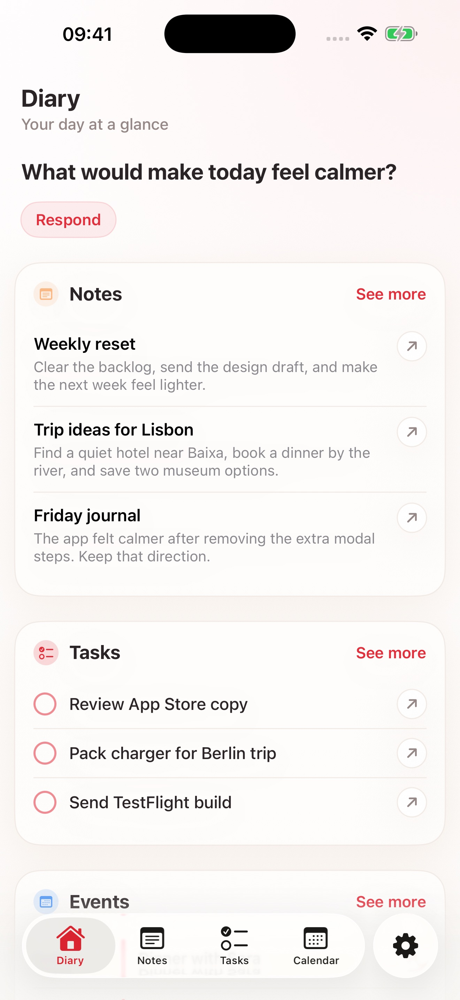
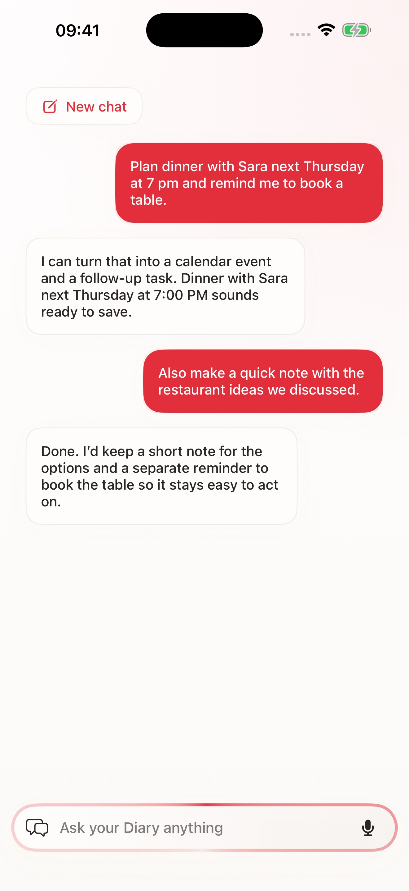
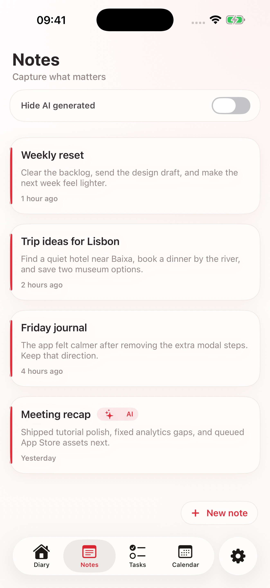
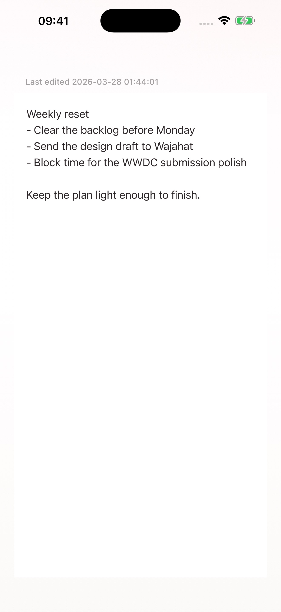
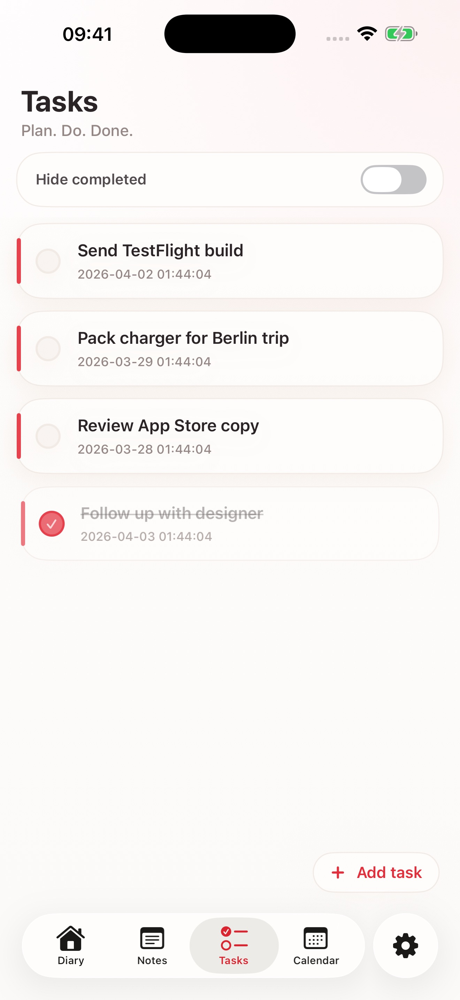
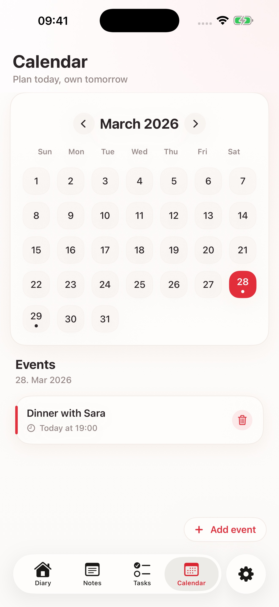
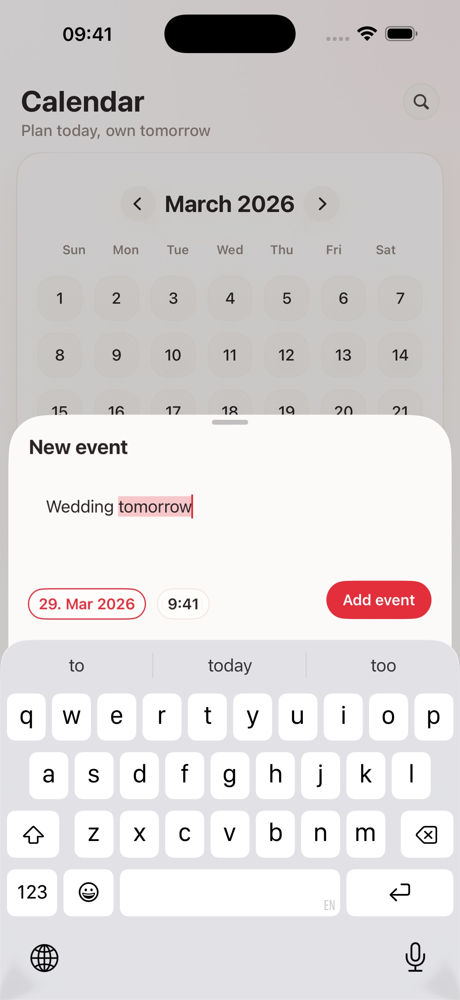
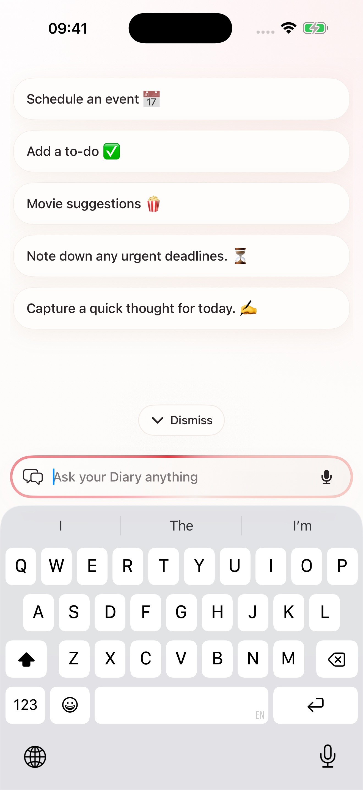
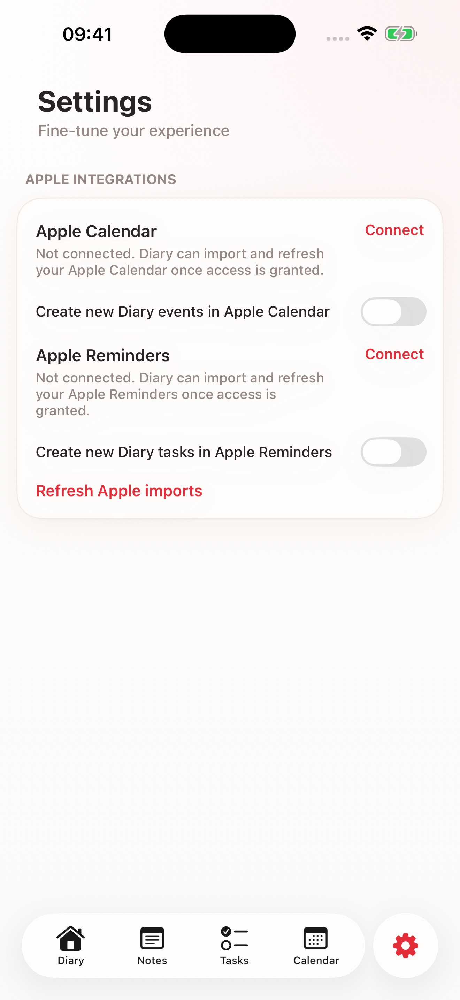

Your day at a glance.
Journella brings notes, tasks, events, search, and AI-assisted planning into one warm, focused experience. Keep what matters close, move from idea to action, and ask Journella anything without breaking your flow.


Capture what matters, then keep shaping it.
From quick personal entries to AI-assisted drafts, Journella keeps notes close to the rest of your day so ideas do not get stranded between separate tools.


Keep tasks and calendar in the same flow.
Tasks and events stay visible next to each other, so planning today and following through tomorrow feel connected instead of split across apps.



Ask Journella anything when you need a next step.
Start from a suggestion or type your own prompt. Journella helps you move from a rough idea to something actionable inside the app.

Fine-tune the experience around your day.
Control Apple Calendar and Apple Reminders access, refresh imports, and keep optional integrations configured the way you want them.
